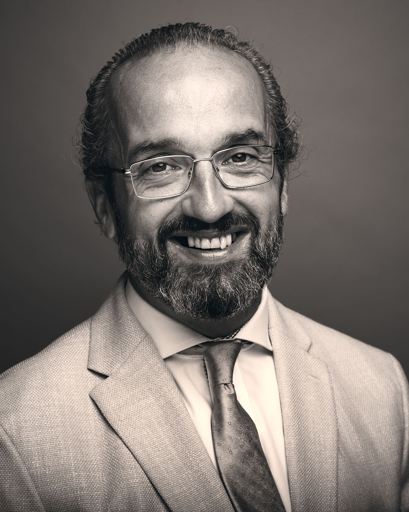

About Steffan | Ferngully Mobile Notary
Steffan Welch has been helping customers with technology solutions for over 20
years. At Ferngully Mobile Notary, Steffan ensures that customers receive the
most professional and reliable notarial services available.
To schedule an appointment or if you have any questions, please call or text 408.823.9607.